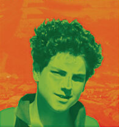
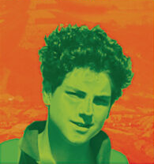

Imagen

2006: Conmovedor
El lunes 2 de octubre de 2006 Carlo se enferma y en un primer momento se piensa que se tratase sólo de una simple gripe. El domingo 8 de octubre las condiciones de Carlo empeoran dramáticamente y lo trasladan a la clínica De Marchi de Milán, donde le diagnostican una leucemia fulminante con el tipo M3. Lunes 9 de octubre, Carlo es transferido al hospital San Gerardo de Monza El martes 10 de octubre de 2006 Carlo pide recibir la Unción de los enfermos y la Santa Comunión, con la certeza de que moriría en un futuro cercano. El miércoles 11 de octubre de 2006 Carlo entra en coma por una hemorragia cerebral causada por la leucemia fulminante con el tipo M3, que se había manifestado tan sólo 5 días antes. Los médicos, a las 17.00 hs., lo declaran clínicamente muerto, tras haber cesado todas las funciones cerebrales. La familia, incluso queriendo donar los órganos a un joven que esperaba un trasplante, no pudo hacerlo porque los órganos de Carlo estaban afectados por la leucemia. El jueves 12 de octubre, a las 6.45 hs., el corazón de Carlo deja de latir, y es esa la hora legal de su muerte. El sábado 14 de octubre se celebra el funeral en la Parroquia «Santa Maria Segreta». La iglesia estaba tan llena que muchos se vieron obligados a permanecer fuera.